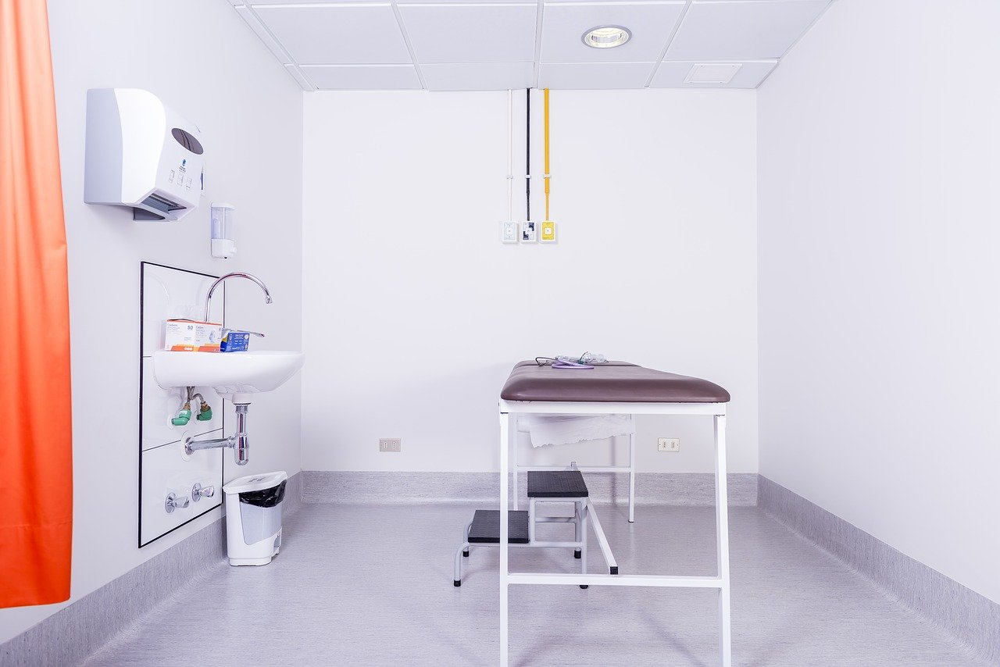

te cuento un poco del consultorio

1Un medico personal y confiable
Una alternativa diferente para cuidar tu salud. Estoy cuando me necesites.
Este proyecto tiene como fin servir de apoyo para las personas, médicos y consultorios que tienen dificultades en la gestión de citas, a través de la aplicación integrada de tecnologías de información y telecomunicaciones, específicamente en el área de la telemedicina, con la generación de un software de Consultorio On Line enfocado en la gestión de citas altamente útil, de fácil acceso y sostenible en el tiempo, utilizando como medio base el Internet, programación, que actualmente permite funcionamiento de distintas tecnologías en forma global.
te cuento un poco de mi
2Soy un medico que se preocupa por ti
- Nombre: Juan cortez
- Localización: Diagonal 64b # 10 la florida-nariño
- Especialidad: Medico General
- Horario de Atencion: lunes a viernes 8:00 am - 12:00 pm y 2:00 am - 6:00 pm